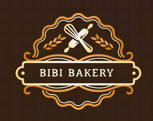

Trade Mark Journal No.2025/045 7 November 2025
UK00004286249 29 October 2025 (30)

- Class 30
- Cake frosting; Cake icing; Cake frosting [icing]; Frosting [icing] (Cake -); Chocolate cake; Icing for cakes; Cake batter; Sponge cake; Cake dough; Candy cake; Almond cake; Cakes; Cake flour; Cake doughs; Treacle cake; Breakfast cake; Cake Pops; Chocolate cakes; Cake mixes; Cake bars; Cake powder; Powder (Cake -); Candy cake decorations; Ice-cream cakes; Cake preparations; Cake mixtures; Cream cakes; Cupcakes; Sponge cakes; Chocolate decorations for cakes; Dough for cakes; Cake decorations made of candy; Deep chocolate cake made with chocolate sponge; Iced sponge cakes; Iced cakes; Fruit cakes; Fruit cake snacks; Tea cakes; Rice cake snacks; Plum cakes; Chocolate covered cakes; Cheesecake; Iced fruit cakes; Candy decorations for cakes; Vegan cakes; Barm cakes; Crystallized sugar for decorating cakes; Ice cream cakes; Icing; Rice cakes; Cakes (Rice -); Pastries, cakes, tarts and biscuits (cookies); Custard-based fillings for cakes and pies; Malt cakes; Chimney cakes; Moon cakes; Flavorings for cakes; Chocolate-coated rice cakes; Half-moon-shaped rice cake [songpyeon]; Frozen cakes; Flapjacks [griddle cakes]; Chocolate-based fillings for cakes and pies; Flavourings for cakes; Chocolate brownies; Millet cakes; Sponge fingers [cakes]; Icing sugar; Chocolate marzipan; Candied cakes of popped rice; Powder for making cakes; Chocolate desserts; Macaroons [pastry]; Mixes for making cakes; Brownies; Strawberry gateaux; Half-moon-shaped cake of rice containing sweet or semi-sweet fillings (songpyeon); Frozen yogurt cakes; Dessert puddings; Frosting mixes; Korean traditional rice cake [injeolmi]; Dessert souffles; Icing mixes; Chocolate biscuits; Mixtures for making cakes; Stir fried rice cake [topokki]; Cheesecakes; Chocolate for confectionery and bread; Pounded rice cakes (mochi); Marzipan; Songpyeon [half-moon-shaped rice cakes with sweet or semi-sweet fillings]; Ice cream gateaux; Chocolate pastries; Rice-based pudding dessert; Brownie dough; Custards [baked desserts]; Steamed sponge cakes (fagao); Chocolate covered wafer biscuits; Pastry; Shortcrust pastry; Pastry dough; Filo pastry; Puff pastry; Pastry shells; Frozen pastry; Pastry mixes; Long-life pastry; Frozen pastry sheets; Pastry cases; Phyllo dough; Flaky pastry containing ham; Filo dough; Empanada dough; Fruit filled pastry products; Frozen pastry stuffed with vegetables; Pâté [pastries]; Frozen pastry stuffed with meat; Pastries; Almond pastries; Orange based pastry; Pastry shells for monaka; Filo doughs; Biscotti dough; Spring roll skin [pastry]; Skin [pastry] for spring rolls; Danish pastries; Frozen pastry stuffed with meat and vegetables; Poppy seed pastry; Viennese pastries; Custard tarts; Frozen biscotti dough; Flour for baking; Brioches; Dough flour; Quiche [tart]; Pizza dough; Prepared desserts [pastries]; Flour for doughnuts; Eclairs; Flour-based dumplings; Croissants; Flour-based gnocchi; Meringue; Dough; Cookie dough; Pastries with fruit; Fruit pastries; Potato flour confectionery; Pie crusts; Flour confectionery; Frozen pastries; Mousse confections; Bread doughs; Frozen cookie dough; Chocolate fillings for bakery products; Truffle flour; Frozen brownie dough; Crepes; Fondants [confectionery]; Pizza flour; Meringues; Danish bread rolls; Custard; Sopapillas [fried pastries]; Profiteroles; Macarons; Cornflour bun bread (almojábana); Pastries filled with fruit; Savory biscuits; Viennoiserie; Shortbread biscuits; Fried dough cookies; Quiche; Almond confectionery; Bread biscuits; Quiches [tarts]; Danish bread; Cream pies; Baklava; Savoury biscuits; Flour mixtures for use in baking; Cream buns; Danish butter cookies; Dried sugared cakes of rice flour (rakugan); Baguettes; Biscuits for cheese; Wafer dough; Pavlovas flavoured with hazelnuts; Pre-baked bread; Pizza crust; Jam filled brioches; Shortbread with a chocolate coating; Confectionery chips for baking; Truffles [confectionery]; Filled yeast dough with fillings consisting of meat; Shortbread; Butter biscuits; Pizza dough mix; Bread buns; Bread and buns; Flour ready for baking; Almond flour; Pizza crusts; Prepared desserts [confectionery]; Biscuits; Hardtack [biscuits]; Cheese-flavored biscuits; Toasts [biscuits]; Rice biscuits; Wafer biscuits; Malt biscuits; Onion biscuits; Salty biscuits; Aperitif biscuits; Salted biscuits; Biscuits flavoured with fruit; Rolled wafers [biscuits]; Petit-beurre biscuits; Chocolate coated biscuits; Salted wafer biscuits; Onion or cheese biscuits; Biscuit rusk; Filled biscuits; Chocolate covered biscuits; Biscuits containing fruit; Biscuits containing chocolate flavoured ingredients; Biscuits having a chocolate flavoured coating; Scones; Biscuits having a chocolate coating; Half covered chocolate biscuits; Milk chocolate teacakes; Chocolate coated marshmallow biscuits containing toffee; Shortbreads; Biscuits with an iced topping; Biscuits for human consumption made from cereals; Oat biscuits for human consumption; Rusks; Sweet biscuits for human consumption; Biscuits for human consumption made from malt; Crisps made of cereals; Crispbread snacks; Snack food products made from rusk flour; Muesli desserts; Crumpets; Breakfast cereals, porridge and grits; Crackers flavoured with cheese; Shortbread with a chocolate flavoured coating; Hushpuppies [breads]; Flapjacks; Cereal snack foods flavoured with cheese; Breakfast cereals flavoured with honey; Milk puddings; Crackers flavoured with spices; Milk chocolates; Crackers flavoured with meat; Wholewheat crisps; Cereal-based savoury snacks; Bread flavoured with spices; Crackers flavoured with fruit; Savoury pancakes; Biscotti; Hamburgers contained in bread buns; Crackers flavoured with herbs; Sweets (Non-medicated -) in the nature of chocolate eclairs; Puffed cheese balls [corn snacks]; Chocolate waffles; Snack food products made from cereal flour; Peanut butter confectionery chips; Crackers flavoured with vegetables; Snack food products made from potato flour; Bread pudding; Cheese flavored puffed corn snacks; Muffins; Snacks made from muesli; Cheese balls [snacks]; Pies [sweet or savoury]; Cereal snacks; Cookies; Almond cookies; Fortune cookies; Filled cookies; Egg roll cookies; Cookie mixes; Fried dough cookies (karintoh); Korean traditional sweets and cookies [hankwa]; Gingersnaps; Chocolate sweets; Chocolate candies; Peppermint sweets; Sweets (Peppermint -); Chocolate wafers; Chocolate fudge; Chocolate caramel wafers; Chocolate chips; Chocolate topped pretzels; Candies [sweets]; Chocolate confections; Caramels [sweets]; Chocolate candy with fillings; Chocolate decorations for confectionery items; Chocolate for toppings; Chocolate creams; Gingerbread nuts; Chocolate; Caramels [candies]; Milk chocolate; Chocolate shells; Baking soda [bicarbonate of soda for baking purposes]; Chocolate truffles; Peppermint candy; Doughnuts; Coconut macaroons; Sweets [candy].
BiBi Bakery Ltd